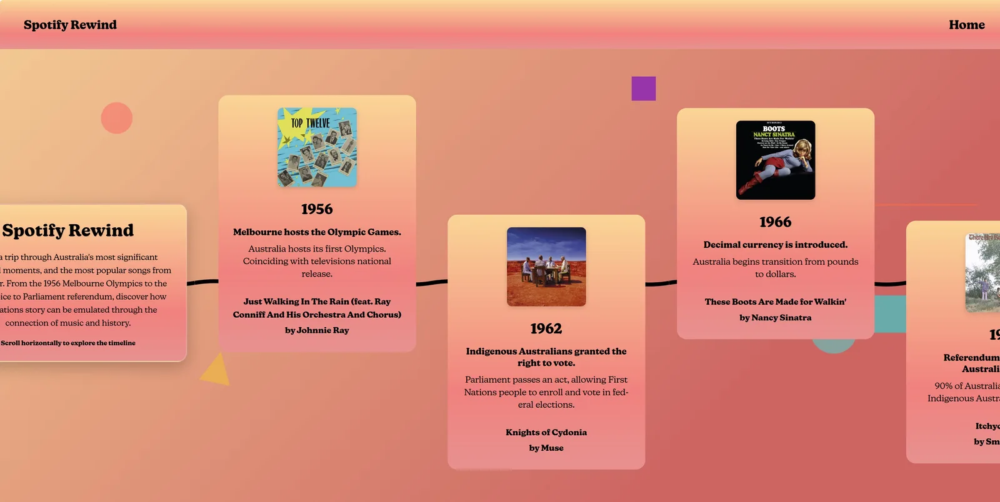

Spotify Rewind
An interactive timeline that places pivotal moments in Australia's history beside the highest-charting ARIA song of the same year — two separate snapshots of a year, shown side by side, for users to read against each other however they like.

The challenge
Australia's history and Australia's music charts usually live in completely different places — a textbook on one shelf, a streaming app on another. The brief was simply to put them in the same view, year by year, and let users decide for themselves what to make of seeing the two side by side.
Building it surfaced a stack of constraints that pulled against each other:
- Authenticating Spotify's API and threading live track data through a Vue.js front end.
- Pinning down a target user — music enthusiasts and casual learners — and what they'd actually want to do with this experience.
- Showing more than fifteen key events in Australia's history alongside the ARIA chart-topper of the same year, without one ever overshadowing the other.
- Holding the experience together responsively from phone to desktop.
My approach
Three pillars carried the work — a clear concept, a design language that matched the subject matter, and a technical build that earned its complexity.
Concept
- Cross-referenced the NMA's timeline of significant Australian events with the ARIA top song of each year.
- Held each entry as two independent facts shown side by side — an event and a chart-topper from the same year — without claiming one explains or shapes the other.
- Designed for browsing, not searching — the timeline rewards scrolling.
Design
- Retro visual language — neon palette, geometric motifs — to evoke nostalgia without locking the work to one decade.
- Animated background shapes referencing the iconic 80s graphic language.
- Type and contrast tuned for legibility against the busy backdrop.
Build
- Vue.js front end driving a dynamic, component-based timeline.
- cURL handling Spotify API authentication and track data.
- A details view on each event for users who want to dig deeper.
What I built
- Horizontal scrolling timeline — chronological browsing of Australian events with the chart-topping song from the same year shown beside each one.
- Event + song juxtaposition — every entry surfaces the historical event next to its ARIA-charting song of the same year, with a details view for further reading. No claim is made that one shaped the other.
- Direct-to-Spotify playback — a one-click jump to the Spotify web player so users can actually listen, not just read.
See it for yourself
The timeline is best experienced by scrolling through it. Try the live site, or dig into the code.